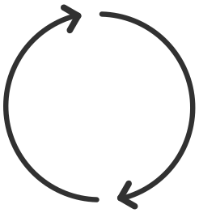

{{ audioplayer.song?.title || 'Empty' }}
{{ audioplayer.song?.description || 'Empty' }}

{{ audioplayer.song?.description || 'Empty' }}
{{ index + 1 }}. {{ el.title }} {{ el.description }}
{{ alertText }}